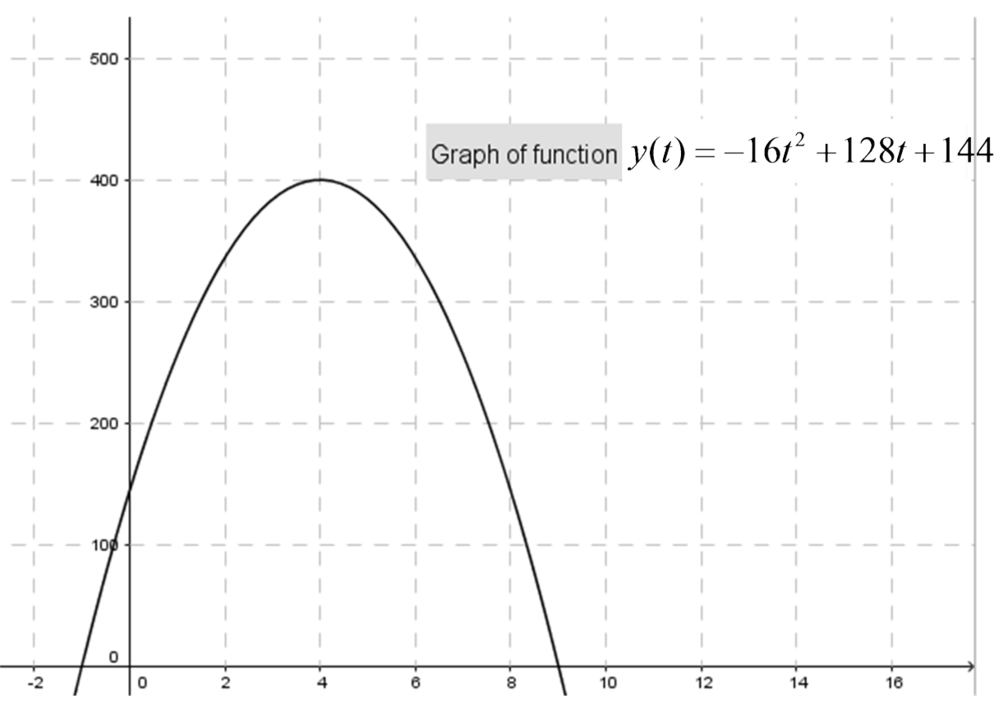

Let the function \(f\) be defined by \(f(t)=-16t^2+128t+144\).
Use this graph, and the given function, \(f\), to answer the following questions.

- (a)
- Mark the part of the parabola that can be used to model the position of the ball.
- (b)
- What are the units on the \(t\) axis? What are the units on the \(y\) axis?
- (c)
- If you were watching a movie of the ball being thrown, is the graph a picture of the path that the ball follows? Why or why not?
- (d)
- Let \(f(t)\) denote the height of the ball at time \(t, t\geq 0\). What is the height of the ball at time \(t=0\)?
- (e)
- When will the ball hit the ground?
- (f)
- What is the domain of the position function, \(f\), of the ball?
- (g)
- Use the table of values to find the average velocity of the ball between \(t=8.9\) and \(t=9\)
seconds. \[ \begin {array}{|l|l|} \hline t & \approx f(t) \\ \hline 8.9 & 15.84 \\ \hline 8.99 & 1.6 \\ \hline 8.999 & 0.159984 \\ \hline 8.9999 & 0.015998 \\ \hline 9 & 0 \\ \hline \end {array} \]
- (h)
- Use the table of average velocities to approximate the instantaneous velocity of
the ball when it hits the ground. \[ \renewcommand *{\arraystretch }{2.5} \begin {array}{|l|l|} \hline \text {Time Interval} & \text {Average Velocity} \\ \hline [8.9, 9] & \frac {f(9)-f(8.9)}{.1}=\frac {0-15.84}{.1}=-158.4 \\ \hline [8.99,9] & \frac {f(9)-f(8.99)}{.01}=\frac {0-1.5984}{.01}=-159.84 \\ \hline [8.999, 9] & \frac {f(9)-f(8.999)}{.001}=\frac {0-.159984}{.001}=-159.984 \\ \hline [8.9999, 9] & \frac {f(9)-f(8.999)}{.0001}=\frac {0-.0159998}{.0001}=-159.998 \\ \hline \end {array} \]
- (i)
- Compute \(v_{AV(t)}\) the average velocity of the ball on the time interval \([t, 9]\), where \(t<9\).
- (j)
- Compute \(v(9)\), the instantaneous velocity of the ball at \(t=9\).
\begin{align*} v(9)&=\lim _{t \to 9^{-}}v_{AV(t)}\\ &=\lim _{t \to 9^{-}}\dfrac {f(9)-f(t)}{9-t}\\ \end{align*}
Notice that this is an indeterminate form, with form \(\ZeroOverZero \).
\begin{align*} v(9)&=\lim _{t \to 9^{-}}v_{AV(t)}\\ &=\lim _{t \to 9^{-}}\dfrac {f(9)-f(t)}{9-t}\\ &=\lim _{t \to 9^{-}}-16(t+1)\\ &=-16(9+1)\\ &=-160 \ \text {feet per second} \end{align*}